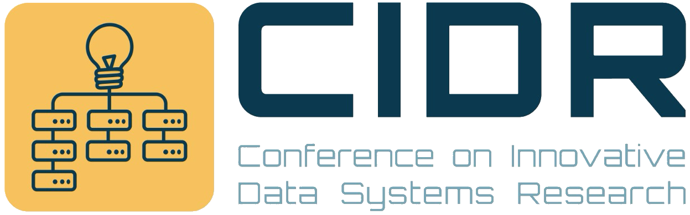

January 24-27, 2027 Amsterdam, The Netherlands

A Time-Series Database on Object Storage at Tesla
Colin Breck (Tesla)
Agent Normal Form: A Semantic Substrate for Agent Data
Ran Bai (Huawei); Essam Mansour (Concordia University); Cong Gao (Nanyang Technological University); Xue Xue (Huawei); Di Yang (Huawei); Yang Ren (Huawei)
Agentic Parsing: Reading CSV Files the Way Humans Do
Luisa Neubauer (University of Technology Nuremberg (UTN)); Robin Sternberg (University of Technology Nuremberg (UTN)); Jan Kossmann (Snowflake); Mihail Stoian (University of Technology Nuremberg (UTN)); Andreas Zimmerer (University of Technology Nuremberg (UTN)); Dominik Horn (Amazon); Pascal Pfeil (Amazon); Varun Pandey (University of Technology Nuremberg (UTN)); Johannes Thürauf (University of Technology Nuremberg (UTN)); Alexander van Renen (University of Technology Nuremberg (UTN)); Andreas Kipf (University of Technology Nuremberg (UTN))
BEGIN AI TRANSACTION: Semantic Isolation for Durable AI Workflows
Barzan Mozafari (University of Michigan)
BpRobust: A Learned Build-Plan for Robust Physical Operator Selection via Compiled Trees
Nazanin Rashedi (University of Mannheim); Guido Moerkotte (University of Mannheim)
CODAs: Computational Data Paths for Lakehouses
Jonas Dann (ETH Zurich); Gustavo Alonso (ETH Zurich); Yannis Chronis (ETH Zurich); Maximilian Heer (ETH Zurich); Sven Hepkema (ETH Zurich); Ana Klimovic (ETH Zurich); Vasilis Mageirakos (ETH Zurich); Benjamin Ramhorst (ETH Zurich); Silvia Alcaraz (ETH Zurich); Bowen Wu (ETH Zurich); Yu Zhu (ETH Zurich)
Complete CALM: A Unified Criterion for Coordination
Joseph Hellerstein (UC Berkeley and Amazon Web Services)
Concord: A Video Relational Algebra for Cross-Modal Query Optimization
Sultan Muratbek (University of California, Berkeley); Charisse Yeung (University of California, Berkeley); Chanwut Kittivorawong (University of California, Berkeley); Alvin Cheung (University of California, Berkeley)
Credo: Reusable Declarative Primitives for Agentic Workloads
Duo Lu (Brown University); Andrew Crotty (Northwestern University); Ugur Cetintemel (Brown University)
Dataflow-Oriented Debugging for Data Science Pipelines
El Kindi Rezig (University of Utah); Michael Stonebraker (MIT CSAIL)
DeciDB: In-Database Processing of Decision Queries
Anh Mai (New York University Abu Dhabi); Filip Milisov (New York University Abu Dhabi); Hatim Rehmanjee (New York University Abu Dhabi); Azza Abouzied (New York University Abu Dhabi); Peter Haas (University of Massachusetts Amherst); Alexandra Meliou (University of Massachusetts Amherst)
Experience Graphs: The Data Foundation for Self-Improving Agents
Gang Liao (Meta); Yujia He (Meta); Abdullah Ozturk (Meta); Zhouyang Li (Meta); Ying Wang (Meta); Zhitong Guo (Meta); Hongsen Qin (Meta); Yaobin Qin (Meta); Tao Yang (Meta); Zewei Jiang (Meta); Dianshi Li (Meta); Jort Gemmeke (Meta); Jiangyuan Li (Meta); Liyuan Li (Meta); Nathan Yan (Meta); Masha Basmanova (Meta); Uladzimir Pashkevich (Meta); Matt Steiner (Meta); Pedro Pedreira (Meta); Carole-Jean Wu (Meta); Rob Fergus (Meta); Anirudh Goyal (Meta); Gaoxiang Liu (Meta); Andrew Witten (UMD); Daniel Abadi (UMD)
EXPLAIN Yourself! Finding Query Planner Stalls Across DBMSes
Geoffrey Yu (Massachusetts Institute of Technology); Ryan Marcus (University of Pennsylvania); Tim Kraska (Massachusetts Institute of Technology)
From Data Querying to Data Investigations: Rethinking Natural Language Interfaces for Databases
Fabian Wenz (TU Darmstadt and MIT); Zixuan Chen (TU Darmstadt); Carsten Binnig (TU Darmstadt, hessian.AI and DFKI)
Generative AI for Apache Spark: Lessons from Building Production Upgrade and Troubleshooting Agents
Mohit Saxena (Amazon Web Services); Keerthi Chadalavada (Amazon Web Services); Pramod Chunduri (Amazon Web Services); Muhammad Ali Gulzar (Amazon Web Services); Vishal Kajjam (Amazon Web Services); Bo Li (Amazon Web Services); Jinyang Li (Amazon Web Services); Malinda Malwala (Amazon Web Services); Vaibhav Naik (Amazon Web Services); Kartik Panjabi (Amazon Web Services); Mukul Prasad (Amazon Web Services); Vidyashankar Sivakumar (Amazon Web Services); Wei Tang (Amazon Web Services); XiaoRun Yu (Amazon Web Services)
Know Thy State: Placement Cues for Query Operator States on Tiered Memory
Abdelrahman Adel (Technische Universität München); Georgiy Lebedev (EPFL); Marcel Weisgut (HPI, University of Potsdam); Jana Giceva (Technische Universität München); Sanidhya Kashyap (EPFL); Anastasia Ailamaki (EPFL)
MACS: One SSD, Many Places to Compute
Alberto Lerner (Computing Flows GmbH); Philippe Bonnet (University of Copenhagen); Kibin Park (Computing Flows GmbH); Sangjin Lee (Computing Flows GmbH)
Query Blueprints for Querying Opaque Schemas
Moe Kayali (University of Washington); Michael Theologitis (University of Washington); Dan Suciu (University of Washington)
Reclaiming the GPU's Forgotten Half: Getting Your Join's Mojo Back with Tensor Cores
Simon Frisk (University of Wisconsin-Madison); Shaleen Deep (Microsoft Gray Systems Lab); Hangdong Zhao (Microsoft Gray Systems Lab); Yuanyuan Tian (Microsoft Gray Systems Lab); Paraschos Koutris (University of Wisconsin-Madison)
Reports of mmap()'s Death Are Greatly Exaggerated
Tal Zussman (Columbia University)
Rethinking Document Indexing for LLM-based Analysis
Donna Pham (University of Michigan); Zhongwei Xu (University of Michigan); Siyuan Dong (University of Michigan); Haotian Gong (University of Michigan); Lin Ma (University of Michigan)
Rethinking Vector Search in Databases with Local Indexes
Leonardo Kuffo (CWI); Simon van Noort (CWI); Peter Boncz (CWI)
Revisiting the Algebraic Foundation of Relational Data
Remy Wang (University of California, Los Angeles); Paul Talma (University of California, Los Angeles)
Rows? Where We're Going, We Don't Need Rows. Redefining Data Connectivity for the AI Era with ADBC.
Samuel Arch (Carnegie Mellon University); David Li (Columnar Technologies); Matthew Topol (Columnar Technologies); Ian Cook (Columnar Technologies); Bryce Mecum (Columnar Technologies); Mandy Alimaa (Columnar Technologies); Dewey Dunnington (Wherobots); Felipe Carvalho (dbt Labs); Curt Hagenlocher (Microsoft); Pedro Holanda (DuckLabs); Kent Wu (Columnar Technologies); Emil Sadek (Columnar Technologies); Tatsuya Shima (Columnar Technologies); Wes McKinney (Kenn Software)
Running Loops around Recursive SQL
Daan de Graaf (Eindhoven University of Technology); Altan Birler (Technische Universität München); Thomas Neumann (Technische Universität München); Nikolay Yakovets (Eindhoven University of Technology)
Share Now, Cohere Later: Sync-Frugal Databases on CXL 2.0
Alexander Baumstark (TU Ilmenau); Laurin Martins (TU Ilmenau); Lei Chen (TU Ilmenau); Andreas Becher (TU Ilmenau); Kai-Uwe Sattler (TU Ilmenau)
The Case for Single-Version Concurrency Control in the Cloud
Lam-Duy Nguyen (Technische Universität München); Gabriel Haas (Technische Universität München); Muhammad El-Hindi (Technische Universität München); Viktor Leis (Technische Universität München); Philip Bernstein (Microsoft Research)
The Cliff and the Slope: Unequal Protection Against In-memory Data Corruption for Quantized Vector Indexes
Jonathan Hsu (National Tsing Hua University); Ming-Yang Zheng (National Tsing Hua University); Ting-Hsuan Huang (National Tsing Hua University); Yun-Chih Chen (National Tsing Hua University)
The Glorious Dead
Yuchen Liang (Carnegie Mellon University); Jose Pereira (University of Minho); Shreya Shankar (Carnegie Mellon University); Jignesh Patel (Carnegie Mellon University); Andrew Pavlo (Carnegie Mellon University)
Time to Move on: Querying without Nulls and Bags
Molham Aref (RelationalAI); Leonid Libkin (RelationalAI & University of Edinburgh); Wim Martens (University of Bayreuth)
Token-Efficient Data Reasoning Agents via Adaptive Structuring of Unstructured Data
Milad Rezaei Hajidehi (Harvard University); Qitong Wang (Harvard University); Stratos Idreos (Harvard University)
Towards an AI Software Factory for Data Systems
Anna Pavlenko (Microsoft Gray Systems Lab); Bogdan Crivat (Microsoft); Brandon Haynes (Microsoft Gray Systems Lab); Carlo Curino (Microsoft Gray Systems Lab); Fotis Psallidas (Microsoft Gray Systems Lab); Jaro Slawinski (Microsoft); Johannes Freishuetz (UWisc / GSL); Laura Pereira Sanchez (Microsoft Gray Systems Lab); Markus Weimer (Microsoft); Mathieu Demarne (Microsoft); Matthias Jasny (Microsoft Gray Systems Lab); Mauktik Gandhi (Microsoft); Max Bovykin (Microsoft); Mirco Millettari (Microsoft Gray Systems Lab); Purbasha Ghosh (Microsoft); Qiushi Bai (Microsoft); Raghu Ramakrishnan (Microsoft Gray Systems Lab); Rahul Pandita (Github); Sergiy Matusevich (Microsoft Gray Systems Lab); Shivaram Venkataraman (UWisc); Subru Krishnan (Microsoft Gray Systems Lab); Md. Tareq Mahmood (UWisc); Tiemo Bang (Microsoft Gray Systems Lab); Venkatesh Emani (Microsoft Gray Systems Lab); Xuan Zhao (Microsoft); Yiwen Zhu (Microsoft Gray Systems Lab)
What Happens When the Model Eats the Stack? Rethinking the Research Agenda for Data Agents
Liana Patel (Stanford University); Siddharth Jha (Stanford University); Negar Arabzadeh (UC Berkeley); Carlos Guestrin (Stanford University); Ion Stoica (UC Berkeley); Matei Zaharia (UC Berkeley)
When the Application Layer Is Disposable: Putting Integrity Constraints Back in the Database
Hasara Kalumin (University of Maryland at College Park); Amol Deshpande (University of Maryland at College Park)
Who You Gonna Call? — Both Clusters! (Your SQL Engine Supports Parallel Programming in an Imperative Style)
Tim Fischer (Universität Tübingen); Torsten Grust (Universität Tübingen)